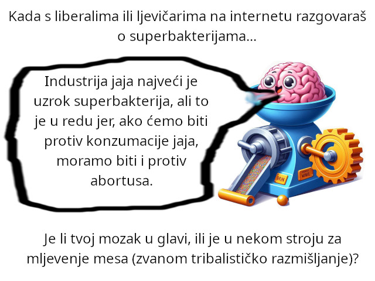

About Vegetarianism
UPDATE on 01/02/2025: I've written a blog-post in which I explain why the common arguments for factory farming are wrong.
UPDATE on 25/07/2024: I've published a YouTube video arguing that people who buy eggs from factory farms don't deserve to live, because they are putting the entire world in the danger of superbacteria (considering that around 70% of antibiotics these days are used in the egg industry) for nothing but their convenience. And I think that this is not even an unpopular opinion (considering that many people here have backyard chickens), it's just that people don't dare say that.
UPDATE on 29/05/2024: I have made a YouTube video about superbacteria. In case you cannot open it, try downloading this MKV video and opening it in some media player.
UPDATE on 27/02/2023: I would suggest you watch this YouTube video (in case your browser cannot stream MP4 videos from YouTube, try downloading this MP4 file from GitHub Pages and opening it in VLC or something similar) I've made today about vegetarianism. It is much more well-researched than this blog-post I made years ago.
UPDATE on 08/02/2024: I have written a blog-post on what not to do when doing vegegelicism.
If you want to jump to the discussion about how vegetarianism could prevent pandemics, click here.
Vegetarianism means abstaining from eating meat. It usually applies to the meat of the birds and mammals, the animals most neuroscientists agree are capable of feeling pain. So, why do I adhere to vegetarianism?
Valuing everyone's freedom,
regardless of how diverse
they are,
is a core of many peoples'
ideologies. However,
hardly anyone is consistent
enough to apply that to animals
of other species.[1]
It's said that eating meat is a natural and healthy way to get the Vitamin B12. However, chances are, the meat you can buy in a supermarket doesn't even contain it. Vitamin B12 is produced by the bacteria in the intestines of some animals. Today, the farmed animals are being regularly fed with antibiotics, which, among other things, kill those bacteria. It's often said that meat is a good source of the Omega-3 fatty acids, which prevent heart disease. Firstly, there isn't much evidence that Omega-3s help prevent heart-disease, and, in fact, there are some good reasons to think they don't (UPDATE on 27/11/2020: Let's try to analyze this issue as scientifially as possible. There are, as you probably know, two basic types of cholesterol, high-density cholesterol (HDL) and low-density cholesterol (LDL). LDL causes heart disease, we know that for certain because there are many pills that cure heart disease by lowering the LDL. As for HDL, as far as I can tell, the best evidence we have suggests it has no effect whatsoever on heart health. However, if you ask me, there is a huge economic (and therefore political) incentive to make people believe HDL lowers the risk of heart disease. Omega-3-acids, found in flax, avocados and fish, to simplify, convert LDL to HDL. Low levels of alcohol raise HDL without significantly affecting LDL. Saturated fat in coconuts, milk, eggs, meat and avocados raise both the LDL and HDL. If HDL lowers the risk of heart disease, then flax is superfood, alcohol is not as harmful, meat and coconuts are not as harmful (or maybe not harmful at all), and so on. But there is no good evidence of any of that. Yet, you cannot deny there is a huge incentive to make people believe that.). Secondly, animals get the Omega-3 from grass, and most of the animals farmed for meat today never see the grass, they spend their entire lives in the factory farms (UPDATE on 27/11/2020: A common counter-argument I get when I state that are the statistics that only 14% or 18% of food given to cows worldwide is grain suitable for humans (implying the rest of it is grass). The first problem with that is that the rest of it is not actually grass, but mostly high-fiber corn grown specifically for cows because their digestive system needs a lot more fiber than our needs. High-fiber grain contains no omega-3 acids either. Second, those statistics are rather misleading because they ignore the vast difference in feed conversion ratio. Feed conversion ratio for cows fed with grain suitable for human consumption is around 2 to 1. Feed conversion ratio for cows fed with high-fiber grain is around 7 to 1. On the other hand, feed conversion ratio for cows fed with grass is so high it cannot even be reliably estimated, estimates range from around 20 to 1 to more than 50 to 1. So, if 10% of cows were fed only with grass, and 90% were fed only with grain suitable for humans (impossible, but I think this is good for illustrative purposes), those statistics would show 50% of food given to cows is grass. See how misleading those statistics are? Furthermore, most of the omega-3-acids in red meat and milk is ALA. And the claim that ALA protects against heart disease is even more scientifically implausible than the claim that DHA, the form of omega-3-acid found in fish and algae, protects against heart disease. Namely, while it is beyond reasonable doubt that DHA raises the HDL cholesterol in humans, it is not clear whether ALA even raises the HDL cholesterol in humans in the first place. In other words, saying "Well, milk is not harmful because it contains omega-3-acids which counter the effects of saturated fat." rests on three questionable premises, and it seems to be quite close to fractal wrongness.). The third argument used to justify eating meat is that it's a way to get enough protein. But, here is a thing, we don't actually know how much protein an adult human being actually needs. The figure of 35% of the energy intake written in many biology textbooks is without a doubt a huge overestimation. There are some experts who think that the reason there is so much osteoporosis these days is, in fact, that peoples blood pH is too low because they are taking too much protein. I am not saying they are right, I am just saying there isn't much evidence for some of the well-known things about nutrition (UPDATE on 27/11/2020: As far as I understand it, most scientists agree the current epidemic of osteoporosis is caused simply by Vitamin K deficiency, which makes studying whether too much protein is to blame for osteoporosis difficult and pointless.).
Some of the other arguments used to justify eating meat is that animal agriculture supposedly helps the environment by fertilising the ground. The fact is, it does exactly the opposite. Actually, it hurts the environment at least as much as the modern traffic does (UPDATE on 27/11/2020: Many people will, in response to arguments about vegetarianism, say stuff like "Well, it does not need to be done that way. We can use animals to make use of the infertile land on which we cannot grow plants for human consumption. They may even make the ground more fertile.". This idea is known as regenerative agriculture. Well, there is a number of problems with that. First of all, pigs obviously cannot be used that way, since they have almost the same nutritional needs as humans have. So, it is still unethical to eat pigs, and probably chicken as well. Second, much of the land that is not suitable for crops also is not suitable for cows because it is too steep (though some more rarely eaten animals, such as goats, can be used that way). Third, land that is infertile for crops tends to be fertile not only for grass edible by cows, but also poisonous plants. That is less of a problem with modern veterinary medicine, but it still is a serious problem that makes regenerative agriculture unscalable. Fourth, however messy this part of ecology may be, all the scholars agree a massive switch from grain-fed cows to grass-fed cows would be a bad thing for the climate, because grass-fed cows emit much more methane. Fifth, the evidence we have that grazing makes soil less fertile is very hard, and the evidence that it can make soil more fertile if properly managed is anecdotal at best. Sixth, and most important, how is that relevant to us? Let us say there is a technology which can make use of vast areas of infertile land. Let us also say that it, as hard as it is to believe, uses animals and produces meat. So what? Meat you and I can buy is most likely produced in factory farms which destroy the environment with antibiotics, or, less likely, from poorly managed pastures. If you buy meat today, you are damaging the environment, and this should not be controversial.). The other one is that it's supposedly easy to show that animals are incapable of higher cognitive functions. But, what requires little intelligence in humans often requires high intelligence in computers and vice versa, and who knows about animals (see The Moravec's Paradox).
Of course, the most common argument for eating meat is that it's supposedly natural. Now, how exactly people think first humans were hunting before the tools necessary for that were invented, I have no idea. Being able to eat meat probably helped our ancestors survive in some cases. Today, it does more harm than good, and that's clear to everyone who looks at the evidence.
Vitamin B12 deficiency wasn't a problem for our ancestors, because they didn't use to clean the fruits and vegetables before eating them, and many bacteria in dust also produce Vitamin B12. Today, it's probably not a good idea. The best source of the Vitamin B12 today is probably shellfish. Many foods, including some exotic plants, contain it, but our body doesn't absorb it from them well. Since around a third of the worlds' population is deficient in the Vitamin B12, it's probably a good idea to take it in form of vitamin pills. Some plants, like flax, contain a lot of Omega-3. However, it contains a different form of Omega-3 than our body needs, and our bodies aren't good at converting between different forms of Omega-3. So, it's not entirely clear if it's better to get Omega-3 from plants or from fish. The foods richest in proteins are beans and cheese. Of course, not all protein is equal, and what our body actually needs is to get all the essential amino acids from the protein in our diet. The soybeans contain enough of all the essential amino acids except the methionine, and the seeds rich in methionine are sesame seeds. However, it's also important not to eat too much methionine. In fact, the dangers of getting too much methionine probably outweigh the dangers of getting too little methionine. And milk of cows, and so do cheese and red meat, probably contains much more methionine than human body needs. Some nutritionists think that, paradoxically, the reason why vegetarians tend to have lower rates of heart disease is that many of them are "deficient" in methionine.
Contrary to popular belief, spinach isn't rich in iron at all. The best vegetarian source of iron is probably lentil (UPDATE on 12/12/2020: It is sometimes argued that red meat is a very good source of iron because of the heme-iron in it, present in no other food, and being absorbed a lot better than free iron. However, it is nearly universally agreed that heme-iron mixed with omega-6-acids, present in meat and even more so in processed meat, causes colon cancer. And, considering that anemia caused by the actual lack of iron is rather rare, a risk-benefit analysis is unlikely to favor ingesting heme-iron. ).
I hope this was enough information for you to understand vegetarianism.I am not arguing for forcing people to be vegetarian (UPDATE on 21/10/2023: Like I've explained elsewhere on this website, I am nearly sure that making meat illegal would make pandemics like COVID-19 significantly more common, because, if meat is illegal, like it is illegal to eat bats in China, animals which are being kept for food don't receive basic veterinary care. That's why, with the exception of the Spanish Flu, all the pandemics in recent history came from illegal meat. I think that is enough reason not to make meat illegal. That's not to say all regulations regarding animal agriculture are bad. Probably any regulation that reduces the massive use of antibiotics in the egg industry is a sensible regulation.), I just hope I've made some people think. Many people want to make the world a better place. But the right way to do that is to start from yourself. Do you strive not to cause unnecessary suffering of the innocent?
(UPDATE on 16/12/2021: On the Internet forums, I have often seen the argument that the studies showing vegetarianism is healthier for humans suffer from one-size-fits-all mindset, that vegetarianism might be healthier for some people but not for others depending on the genes. I think a good response to that argument is that human beings have less genetic variation than within a single breed of dog. If one-size-fits-all does not work for humans, by the same logic some dogs ought to be vegetarians. And I think most people would agree it is absurd to say that.)
UPDATE on 28/07/2018: I've just written a parody showing how anti-vegetarian propaganda sounds like to vegetarians (and to everybody else, I suppose).
UPDATE on 04/08/2019: I've started a thread about vegetarian philosophy on a Latin forum, to see what people educated in philosophy and social sciences think about vegetarian philosophy. In case that website goes down, here is the short essay I wrote in the opening post, together with all the addenda and corrections (feel free to copy from me): Quid homines in hoc foro cogitant de vegetarianismo? Ego vegetarianista sum, ego credo carnem edere non licitum esse. Quomodo id licitum esse possit? Si carnem edimus, aliquis occidi debet. Id saepe non videmus, sed non licet nobis id ignorare. Et in Sina, multi homines canes edunt, easdem canes, quas nos amamus. In Helvetia etiam multi homines feles edunt. An canes et feles quodam modo differentes sunt a bubus et suibus, quas nos occidimus, ut carnem possimus edere? Forsan feles et canes sapientiores bubus et suibus sunt, sed boves et sues certe sapientiores liberis infantibus sunt, et quis neget infantes occidere non licitum esse? Sane, aliquae animalia non possunt vivere si ea animalia carnem non edant. Ergo quid? Mantides religiosae (magna insecta) etiam non possunt subolem habere, si eae non occidant et edant mares suos. An eius causa, quodam modo, licitum est mulieribus, quae homines sunt, suos maritos occidere?
Argumenta pro carne edenda, quae saepe dantur, sunt:
1) Carnis minime carus modus vitamini B12 acquirendi est.
Ita, multa animalia, boves inter alia, habent, in suis lactibus (intestinis), bacteria quae vitaminum B12 faciunt. Sed in carne, quae non cara est, vitaminum B12 paene non datur. Bubus, et aliis animalibus quae edimus, hodie semper antibiotica dantur. Ea antibiotica protegunt ea animalia a morbis, quos bacteria faciunt, quia ea animalia paene semper in parvis et sordidis spatiis sita sunt. Sed antibiotica etiam ea bacteria, quae vitaminum B12 faciunt, occidunt. Antibiotica enim et bona et mala bacteria occidunt. Carnis piscium vitaminum B12 continet, sed caro piscium multo carior (plures pecunias debes dare, ut carnem piscium possis emere) pilulis quae vitaminum B12 continent est.
Dare magnam summam antibioticorum animalibus etiam possibile facit, ut aliquae bacteria, quae et animalia et homines morbidos faciunt, ab antibioticis invulnerabilia fiant. Materia genetica, de invulnerabilitate ab antibioticis, in paene omnibus bacteriis data est, et ea potest activa fieri. Probabiliter, id fit iam hodie. Forsan multos morbos, quae hodie possumus curare antibioticis, in futura non poterimus curare... carnem edendi causa.
2) Edere magnam summam omega-3-acidi protegit a morbis cordis.
Simpliciter, hoc non est veritas. Evidentia huius non datur. Et si hoc veritas esset, non debeamus magnam summam carnis edere, debeamus magnam summam lini edere. Linum enim plenius omega-3-acidis quam caro est.
3) In optima diaeta, triens energiae ex proteinis acquisita est.
De veritate huius informationis loquitur id, quod lac hominum continet paene nulla proteina.
Spero, ut vos de his rebus cogitare faciam. Quod nos edimus, et quem aut quam nos edimus, afficit homines, et alia sentientia animalia, circa nos. Cum carnem emimus, facimus plures carnes fieri, id est, plura animalia ali et occidi. Leges de animalibus protegendis id non afficiunt.
UPDATE on 01/10/2019: I've just posted a video about vegetarianism on YouTube, you can see it here. If you can't, don't worry, all the information given there is also available on this website.
UPDATE on 17/10/2019: I've posted a response video in which I try to debunk the anti-vegetarian claims made by Nina Teicholz, you can see it here. In case it doesn't work, try this.
UPDATE on 01/04/2020: I've posted a response video in which I try to debunk the anti-vegetarian claims made by Peer Ederer, you can see it here. If you can't open it, try this.
UPDATE on 17/05/2020: I've posted a response to a blogger called DietDoctor who advocates meat-based diets, you can see it here.
UPDATE on 29/06/2020: I've made a quick meme about how absurd it is to blame people who eat bats for not caring about their diet causing dangerous pandemics, when most of the these days people do the same:
While it may at first be tempting to think banning meat would lead to significantly fewer pandemics (Even Ben Shapiro, who is otherwise somewhat anti-vegetarian, expressing worries that widespread vegetarianism would lead to widespread lysine deficiency, said "I am mostly libertarian about what people eat, I mostly think people should eat whatever they want, but, if you are going to be eating wild animals, then, I am sorry, but that has such a huge externality that it has to be illegal and cracked down on."), paradoxically, it may even put us into a greater danger. If meat is legal, animals grown for meat receive at least basic veterinary care. If meat is illegal, people still eat it, but they eat it illegally (It might be a good idea to ban preventative use of antibiotics in farmed animals to prevent a pandemic of superbacteria, though, and I have asked a question on an Internet forum about preventing superbacteria.). It is illegal to eat bats in China, and, thanks to that, bats which are eaten do not receive basic veterinary care. Veterinary medicine was at its infancy in 1918 and was greatly stifled by the war. The science of how viruses that jump across species lead to pandemics instead of dying out due to inbreeding (when two viruses infect the same cell) is complicated, and I have asked a question on Quora about it (the linked answer basically says that, while inbreeding is a problem for influenza viruses, it is not nearly as much of a problem as it is for multicellular organisms, and that inbreeding is not at all a problem for coronaviruses, since coronaviruses are haploid), but it is not controversial at all that this happens.
In the modern day of factory farming, of course, another danger exists, and it is antibiotically resistant bacteria. I do not think any expert would deny that factory farming is the biggest cause of antibiotic resistance in humans. Estimates for what percentage of antibiotics goes to farmed animals range between 70% to above 90%. The vast majority of those antibiotics are fed to animals without proper diagnosis, or without any diagnosis whatsoever, they are given preventatively. But antibiotics do not prevent illnesses, they suppress them. And a pandemic of an antibiotic resistant will burst out that will kill not only the animals which are supposed to be protected by those antibiotics, that pandemic will also kill many people. And it is not a question of whether it will happen, it is a question of when it will happen. It is similar to nuclear weapons: maybe nuclear weapons suppress war (which is doubtful), but they certainly don't prevent it, as there is small but real chance of nuclear weapons being fired accidentally. Now, of course, it is hard to quantify what effect giving antibiotics to farmed animals has on antibiotic resistance in humans. Most of the antibiotics go to chicken, animals rather distantly related to humans. Bacteria which can jump between chicken and humans are rare. However, it is hard to argue it is negligible. Furthermore, a non-negligible amount of antibiotics is indeed given to animals rather closely related to humans that are pigs. As I said, I do not think any expert would deny that at lest 50% of antibiotic resistance in humans is caused by factory farming.
I believe the COVID-19 pandemic has given us a brief insight of what life was like for those who came before us, before modern medicine. Consider, for unvaccinated people untreated influenza has death rate of around 0.5%, similar to what COVID-19 has. In centuries of history, death from influenza was as normal as death from COVID-19 is these days. In centuries of history, going to a public event or even to public baths if you are elderly or have weak immune system was a death sentence, much like it is today, at the time of COVID-19 pandemic. In centuries of history, there were always diseases spreading around which people did not fully understand, and for which there was no effective prevention or effective cure, like the COVID-19 was at the beginning of the pandemic. In centuries of history, medicine was usually counter-productive, like it was to some degree (though not nearly as it was in the centuries of history) at the beginning of the COVID-19 pandemic, back when doctors were trying useless and dangerous "cures" based on anecdotal evidence and wild guesses based on what we know about how human body works (which is still not everything). And governments were compelled to try to control the pandemics with damaging policies with dubious effectiveness, just like they are today (UPDATE: I have written a blog-post explaining why I think the mainstream pandemic management (with lockdowns and mask mandates) is worse than useless.). We should do everything we can to prevent us from returning to the centuries of history, or going into something even worse. Stopping eating meat might result in some economic damages, but it will not result in something worse than a pandemic. Making the Earth slightly warmer by switching from factory-farmed cows to pasture-raised cows will also result in some economic damage, but I doubt it will produce as much damage as a pandemic of an antibiotic-resistant bacteria produced by factory farming will do. I think that, before the COVID-19 pandemic, the dangers of a pandemic were minimized in the eyes of the public. They are not any more, and that will be good for the vegetarian movement, and generally for movements against factory farming and against bushmeat.
Before the pandemic, people were not too afraid of a germ that would kill 0.5% of people it infects, vastly disproportionatly killing the already sick. They thought they will not be killed by the virus, so such a pandemic would not affect them. Well, first of all, I think many people who were killed by the virus thought the same. Second, a pandemic is not just the germ, it is also people losing their mind. The germ would have been easily avoidable if many people did not respond to the pandemic by rushing into grocery stores buying unreasonable amounts of everyday products, leading to people being forced to buy food in overcrowded stores and shortages of everyday products. When the only way to get food is to go into crowded stores, whether or not you will get the germ is dumb luck. Pandemic is also economy crashing, partly due to the germ itself and partly due to government policies supposed to slow down the spread of the pandemic, which are, of course, of questionable efficacy. And a pandemic of a germ we can do little or nothing about is, of course, accompanied by a pandemic of suicide we can do little or nothing about. Suicides, mostly in form of drug overdoses, rose around 11% in 2020, vastly disproportionately affecting, for a reason that escapes me, the young and the children (who suffered the least from the bad economic effects of COVID-19), possibly costing about as many life-years as the pandemic itself has. And a pandemic can be a lot worse. While very rare, there are germs that disproportionately kill the young and people with strong immune systems by turning peoples' immune system against them. H5N1 is an example, and Spanish Flu may have been like that (although it is hard to tell from the data we have, it can be that the young were simply more malnutritioned back then because of the war). What if something like that is the next horrible thing that comes from bushmeat? And multiple vaccines against COVID-19, a virus only distantly related to some viruses we knew something about (causing nothing more than common cold in humans and having never been given much attention), having been found in less than a year is almost miraculous. There are germs that have been evading our attempts to find a vaccine that would work in humans, such as HIV or Hepatitis C, for decades. The next pandemic of a virus coming from bushmeat or a bacteria resistant to antibiotics coming from factory farming could easily last much longer, perhaps, just like in case of Spanish Flu (though it is not likely today, given that we understand germs far better now), vaccine never being found and the germ burning itself out only after having killed tens of millions of people. We have seen that even a mild pandemic can be incredibly damaging, and we know a much worse one can emerge from bushmeat or factory farming.
One of the worst things about a pandemic is that it drives some people so much out of their minds that, while there are people dying gasping for air in a gym down the road (because hospitals are overwhelmed), they say stuff like "Well, who cares that there is a pandemic? Most of the people who died from COVID-19 would have died later this year or the very next year anyway." (and, apparenlty, a few years worth of playing with grandchildren counts for nothing, never mind that it is hard to tell whether that statement is even true) or even "Well, this pandemic is a good thing because it is an awakening. Because of the pandemic, there is less smog in the air." (apparently, people being afraid to travel due to the pandemic is somehow a good thing according to some people). I hope that, in spite of such people, something actually useful will be done in order to minimize future pandemics. I guess people who deny this pandemic is a serious issue are suffering from the Stockholm Syndrome, and that most people are denying factory farming is a serious issue for about the same reason.
UPDATE on 27/12/2020: I've made a quick meme against the popular argument against vegetarianism "Most of the land can only feed us using animals.".
UPDATE on 06/04/2023: One of the common arguments against vegetarianism for health is "It's fine to eat meat as long as you eat enough vegetables with it.". Here is my response to it:
But saying that about colon cancer... Which mechanism are you proposing? What from the greens can offset the effect of heme iron?
UPDATE on 23/11/2023: I have started a forum thread about whether it is reasonable to believe that red meat causes type-2-diabetes. The relationship between red meat consumption and type-2-diabetes is not even a question, the real question is whether that relationship is causal. Here is the opening post of that thread:
Recently, as I'm sure you know, there has been yet another major study linking red meat consumption with type-2-diabetes. What do you think, is that relationship causal? If so, how?
As far as I understand it, the mainstream science is that type-2-diabetes is caused almost entirely by fructose causing the liver to become resistant to insulin. But, if that is true, I'd expect red meat consumption and type-2-diabetes to be, if anything, negatively correlated.
Proponents of keto-diets (low-carbohydrate low-protein diets) sometimes claim that eating too much protein (that red meat is high in) causes type-2-diabetes, the supposed mechanism being that too much protein causes gluconeogenesis and raises blood sugar. But, as far as I understand it, that's bullshit, because gluconeogenesis is triggered by the pancreas hormone called glucagon, and has nothing to do with protein in blood.
I have heard some people claim that saturated fat (and red meat is relatively high in saturated fat), like fructose, causes the liver to become resistant to insulin. However, as far as I understand it, whether that effect exists at all is disputed, and therefore it can't be nearly as big as the effect of fructose. It can hardly be used as the explanation for the strong correlation between red meat consumption and type-2-diabetes.
I have heard some people speculate that it's the heme iron (found basically only in red meat) somehow causing the pancreas to produce less insulin, but that, as far as I understand it, doesn't agree with the data. People with type-2-diabetes almost always have higher insulin levels than people without type-2-diabetes, rather than lower.
I've heard some people suggest it could be that people eating a lot of red meat are eating less plants, and that it is something in plants that decreases the risk of type-2-diabetes. But what could it possibly be? I have heard some people speculate that omega-3-acids decrease the risk of type-2-diabetes, but, again, whether that effect exists at all is disputed, and it's difficult to imagine it is so big to explain the correlation between red meat and type-2-diabetes.
I was wondering what you think about that?
UPDATE on 12/06/2025: One thing I keep asking myself is this: ore Balaevi wrote a song called "Ratnik paorskog srca" (Žao mi konja), about how he doesn't feel nearly as sorry for the people who died in World War 1 as he does for the horses who innocently died there. Eric Bogle made a very similar song called "It's as if he knows", again about he feels sorry for the horses who died in World War 1. Why did they write those songs if they aren't vegetarian? Eric Bogle even appears to have expressed some anti-vegetarian sentiments in his song "Now I'm easy" (also known as "Cockey song"). Don't they see that cows and pigs we eat are every bit as innocent as the horses who died in World War 1?
UPDATE on 06/07/2025: Here is a meme which I believe accurately describes many (if not most) of the debates about vegetarianism, veganism, and similar things in the post-COVID world: 
UPDATE on 20/07/2025: So, it has always been puzzling me why people say they value equality and freedom, but they do not apply it to non-human animals. I think it has to do with the fact that most people seem to have an innate (Or is it conditioned by the journalists blaming mass shootings on mental illnesses, usually without mentioning that most mentally ill people are not violent?) desire to discriminate against mentally ill people. If you ask people: "Should people with a severe mental illness, such as psychosis or paranoid schizophrenia, be allowed to own firearms?", almost everybody, left-wing or right-wing, will respond with: "No, that would be too dangerous.". Then you can show them statistics that show that the very premise of that policy of not allowing people with severe mental illness to own firearms is wrong. You can show them that, while mass shooters are more likely to have mild anxiety disorder than an average person is, they are in fact less likely to have a severe mental illness such as paranoid schizophrenia (or, at least, be diagnozed with such diseases). There is quite a bit of evidence linking mild lead poisoning to violent behaviour, but there is nothing like that for any mental illness. This should be enough to convince any reasonable person that such a policy (preventing mentally ill people from owning firearms) is unlikely to work. However, in my experience, very few people are actually convinced by that. People will continue insisting that mentally ill people should not be allowed to own firearms, and some will even explicitly say stuff like: "Mentally ill people should be isolated from the society even if they are not a danger to others.". People will also insist that laws that don't allow people with severe mental illnesses to drive more than 50 kilometers away from home are good laws, even though the empirical evidence that such laws are good is, as far as I know, non-existent (at least one study found that people with schizophrenia are less likely to be speeding and using mobile phones while driving), and those laws are obviously discriminatory. What's happening in praxis because of those laws is that my 60-years-old father is driving the car when we are going somewhere far away, and I am almost certain he is a less safe driver than I am. I don't fully understand people who say stuff like "Mentally ill people should be isolated from the society even if they are not a danger to others.", but it makes me wonder, is it the same psychological effect that makes people think animals should not have rights? Perhaps in the minds of many people animals are beings with such a severe mental illness they do not have the right to live. Just pure speculation, but I think that's possible. That would also explain why libertarians and anarchists are more likely to be vegetarian than the rest of the population: they do not feel that need to discriminate against the mentally ill, so likewise they don't feel the need to discriminate against non-human animals.
UPDATE on 09/08/2025: I've made a meme presenting in a bit dark-humour way what seems to be the most compelling argument for vegetarianism to most people, that is, appeal to emotion by comparing pigs and dogs:
UPDATE on 27/09/2025: I've made a meme about what people who eat meat but are at the same time against hunting sound like to the rest of us: